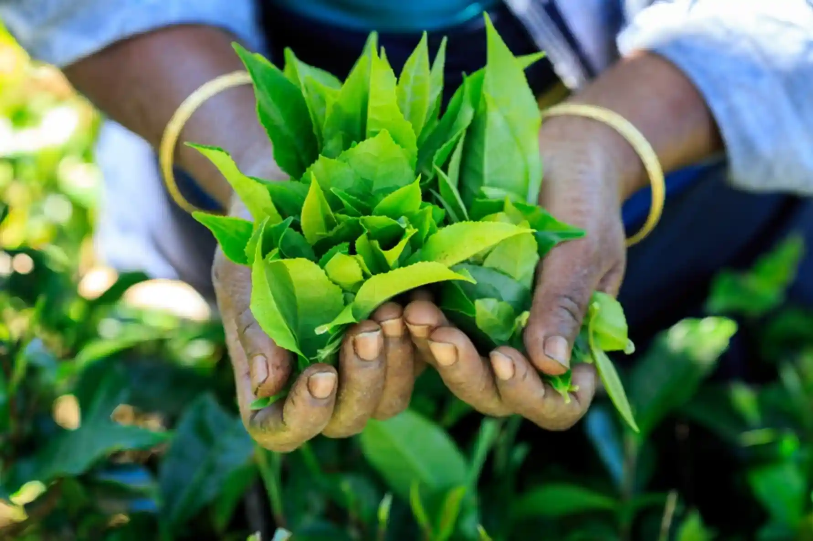
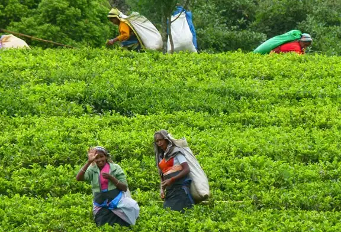
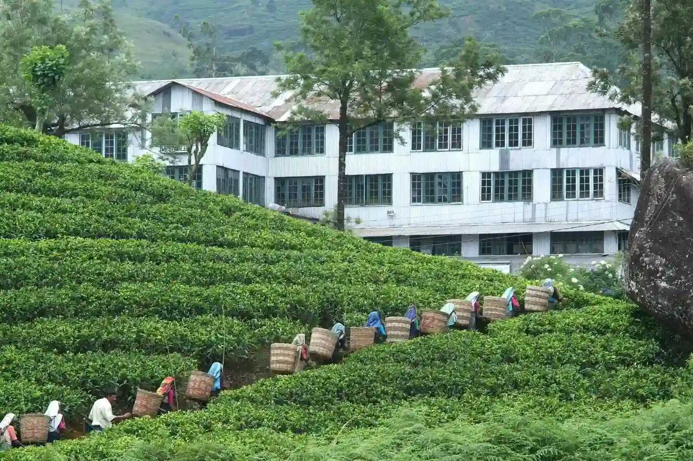

Tea Production and its' economy
The tea industry exported a total of 228 MnKgs of tea in 2021,
fetching for the national economy a
revenue of about US $ 1,320 million. In terms of production, Sri Lanka managed to record a figure of
300
MnKgs last year, which was achieved despite the fertiliser issue hampering the plantation
activities.
The export and production figures are a significant improvement from what was achieved in 2020,
where
the export revenue from Ceylon Tea was of US $ 1,213 million and the production was 279 MnKgs.

Employment
The tea industry in Sri Lanka has played an
important role
in terms of its contribution to the
national
output, employment, and net foreign exchange earnings from its inception in 1867. The industry
has
undergone several changes over the last 150 years. During this period, the ownership of tea
lands
has
changed from privately-owned large-scale tea plantations to nationalized tea plantations managed
by
the
state, and to the present-day regional plantation companies owned by private companies. It
employees
around one million people directly or indirectly

Manufacturing
Sri Lanka’s tea cultivators and manufacturers are the
custodians of the traditional, orthodox method
of
black tea production. This is still agreed by most experts to produce the best black tea. Even with
the
technological improvements introduced over the last thirty or forty years, the orthodox method is
relatively slow and labour-intensive; but as the tea planters and traders of Sri Lanka have always
maintained, good tea cannot be hurried. Nor, oddly enough, can it be delayed. The time devoted to
each
of the processes of tea manufacture has to be finely judged if a quality product is to be obtained.
This
is a matter of the tea-maker’s judgment, for the right timing depends on the moisture content of the
plucked leaf, the temperature and humidity conditions prevailing over the period of manufacture, and
a
variety of other factors. Although the process of making fine black tea is simple in its essentials,
expertise, experience, and a ‘feel’ for the task are absolutely essential to success.